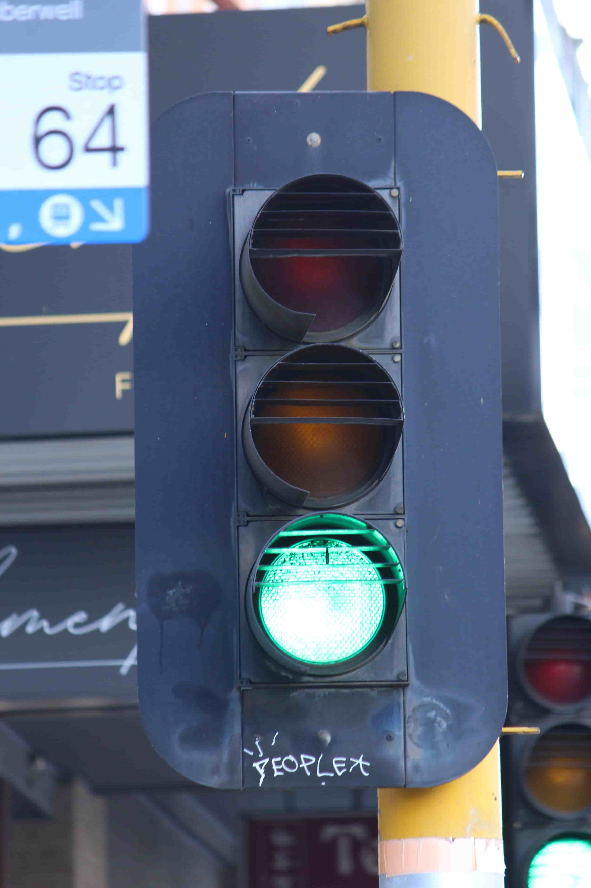
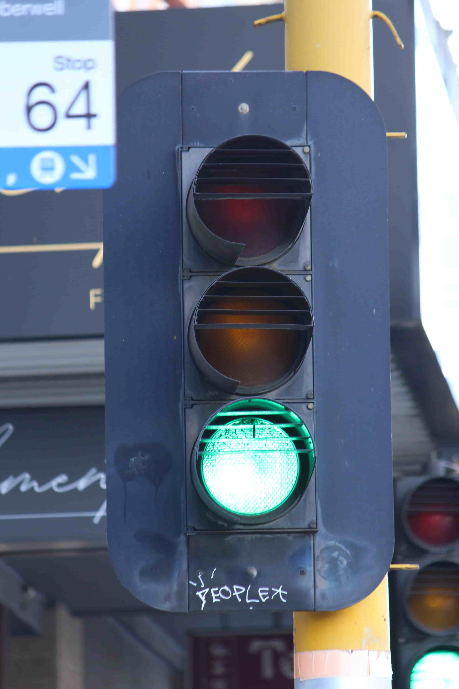

Aldridge manufactured incandescent, and later halogen signals, from the early 1970's to the early 2010's, when halogens were succeeded by LED signals.
| Early Aldridge Traffic Systems | ||
|---|---|---|
| ATS "Durasig" 8" |
ATS "Flatback" 8" |
"ATS Sydney" 8"  |
| Aldridge Group | |
|---|---|
| Aldridge Group 8" |
Aldridge Group 12" |
| Later Aldridge | ||
|---|---|---|
Aldridge Electrical Industries 8" & 12" |
Aldridge Traffic Systems 8" & 12" |
Aldridge Traffic Group 8" |